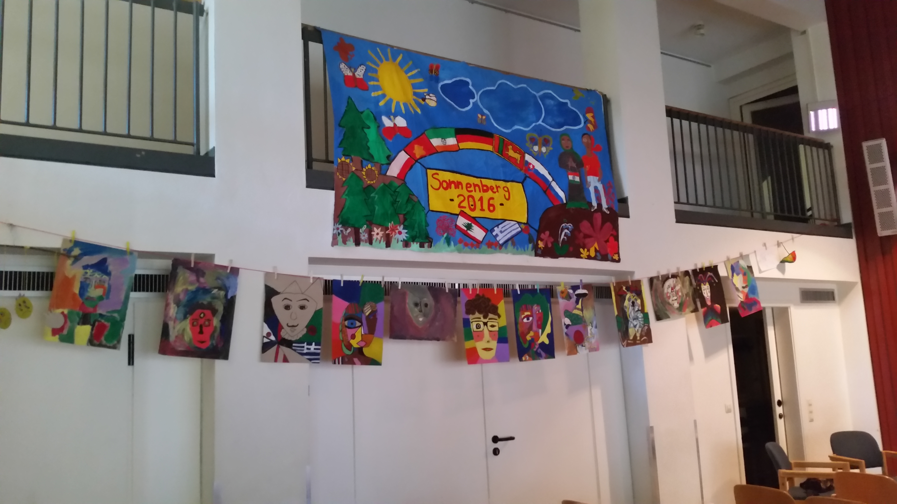
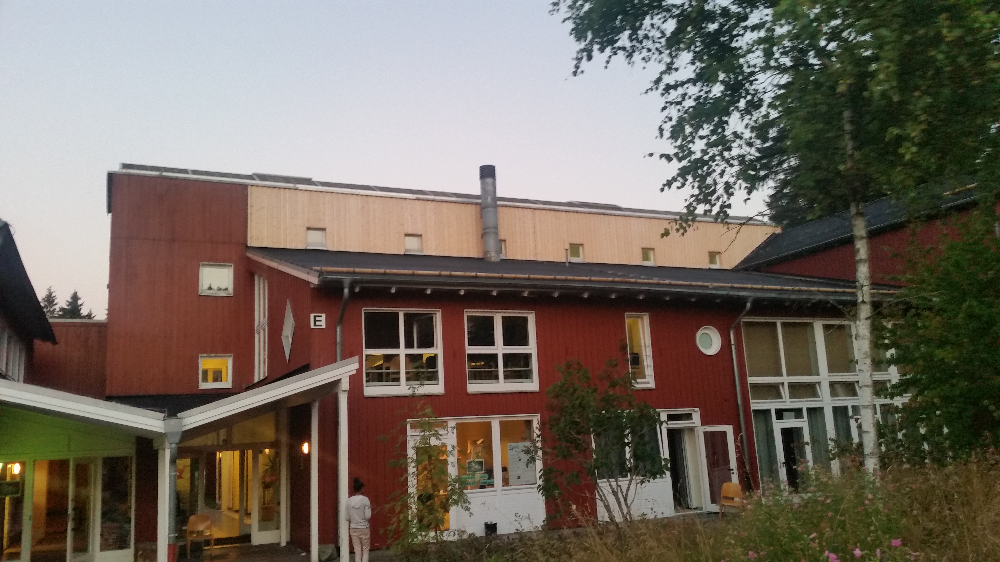

A collection of photos. Under construction......
Some of the places that I’ve been to


Sonnenberg, St. Andreasberg, Germany. I spent an unforgettable three weeks there in August 2016 on a summer school scholarship from the Goethe Institute.